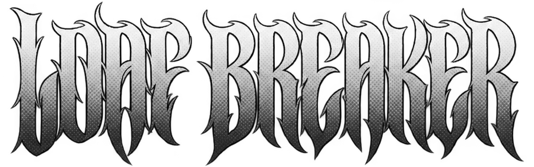
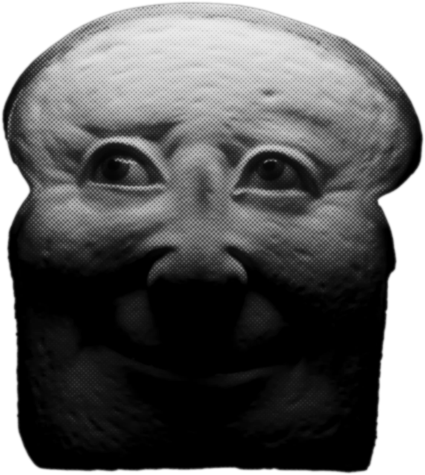
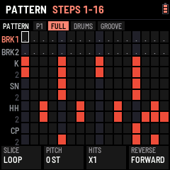

Make your kick
Start from one of eleven ready-made kicks (909, Rotterdam, Gabber, Terror…) and turn four knobs to make it harder, longer or dirtier. Keep up to twenty of your own.

LOAF BREAKER is free firmware for the M-VAVE FM-1. Design your own kick, from a clean thump to a distorted gabber kick. Cut a breakbeat into pieces and replay it on the keys. Build beats and play them live. Made by FLEXOR, and also a plugin for your computer.

Start from one of eleven ready-made kicks (909, Rotterdam, Gabber, Terror…) and turn four knobs to make it harder, longer or dirtier. Keep up to twenty of your own.

A breakbeat loops, and each of the sixteen white keys plays one piece of it. Tap them to rearrange the groove on the fly. Eight breaks inside, many more in the library, or your own samples.

Program the kick, snare, hat and clap step by step, chain your beats into a set with build-ups and drops, and throw effects with the black keys while it plays.
Connect the FM-1 to a computer with its USB cable.
Open Install on this site in Chrome or Edge, click, wait about a minute. Your FM-1 can go back to its original firmware whenever you like.
Press PLAY. A short tutorial on the FM-1's own screen shows you the rest, and Beginner mode keeps things simple until you want more.
The same LOAF BREAKER, running on your computer as a plugin for Ableton, FL Studio and other DAWs, or on its own. Everything the FM-1 does, with room to see it.

Version {{VERSION}} (beta). Installing is at your own risk; the installer can put M-VAVE's own firmware back. Built on CHOPPAH by Laurens Profittlich, on fm1-base and felucca-bsp, from Felucca by Leo Kuroshita, Hügelton Instruments. MPL-2.0. M-VAVE and FM-1 are trademarks of their owners. LOAF BREAKER is not affiliated with M-VAVE.